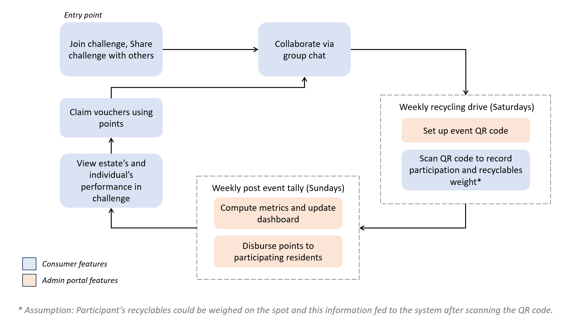

This project is my personal take on Build for Good (BFG) 2024, a yearly citizen hackathon organized by the Singapore Government. For this year, one focus area is "Reducing packaging and food waste, and encouraging recycling".
Singapore's domestic recycling rate has been falling for the past few years, and Singapore's current waste management infrastructure takes time to change. I believe there is an opportunity for residents to improve the situation through cooperation.
To address the focus area in BFG, my solution, Challenge Together, is a community challenge app envisioned to be part of the Singapore government's One Service app. This app is used to administer a Recycling Challenge, where residents cooperate to hit recycling rate targets to collect points that can be converted to vouchers, thus encouraging recycling. How it works:

Consumer-facing features in Challenge Together:
Challenge info page, with "join" and "share" functions
Group chat for residents to facilitate collaboration
Metrics that display the estate's and the individual's weekly performance in the challenge
Points-to-Voucher claim flow
Demo Video
Admin Portal features in Challenge Together:
QR code generation to track resident participation
Points disbursement to participating residents who've hit targets
Metrics dashboard to compare performance across estates
Demo Video
My Role
Market Research
High fidelity Figma wireframe and prototype design
Development and testing of application
Problem Solving Highlights
Tracking Residents' Weekly Contributions
Problem: Requires a mechanism to track participation and contributions without relying on self-reporting (to avoid potential cheating).
Solution: QR code chosen, as it does not require user to fill in information.